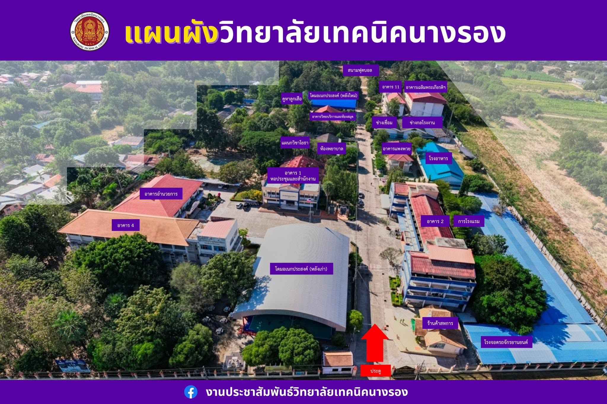

CAMPUS MAP
แผนผังภายในวิทยาลัย
แตะอาคารเพื่อแสดงชื่อ • แตะพื้นที่ว่างเพื่อปิดป้ายชื่อ

หมายเหตุ: ตำแหน่งป้ายชื่อเป็นจุดเริ่มต้นที่วางอ้างอิงจากภาพต้นฉบับ สามารถปรับค่า --x และ --y ในไฟล์ map.html ให้ตรงกับตำแหน่งอาคารได้
CAMPUS MAP
แตะอาคารเพื่อแสดงชื่อ • แตะพื้นที่ว่างเพื่อปิดป้ายชื่อ

หมายเหตุ: ตำแหน่งป้ายชื่อเป็นจุดเริ่มต้นที่วางอ้างอิงจากภาพต้นฉบับ สามารถปรับค่า --x และ --y ในไฟล์ map.html ให้ตรงกับตำแหน่งอาคารได้